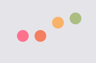

<ion-header>
  <ion-toolbar [color]="isRecording ? 'danger':'primary'">
    <ion-title>Assistente Tea</ion-title>
  </ion-toolbar>
</ion-header>

<ion-content>
 
  
  <ion-card class="chatbody" >
    <ion-content #chatBody>
    <ion-card-header>
      Tea  
    </ion-card-header>
    <ion-card-content>
      <!--<ion-list>
        <ion-item *ngFor="let match of matches" >
          {{match}}
        </ion-item>
      </ion-list>-->
      <ng-container *ngFor="let message of messages">
        
          <div class="message" [ngClass]="{ 'from': message.sentBy === 'bot',
                                            'to':   message.sentBy === 'user' }">
            
                                            
                                            
                                            <div *ngIf="message.placeholder">
                                              
                                            </div>
                                            <span class="text">{{ message.content }}</span>
                                            
          </div>
          
      </ng-container>
    </ion-card-content>
    </ion-content>
  </ion-card>

  <div class="fixedContent">
    <ion-button color="success" ion-button size="large" (click)="startListening()">Chiedi a Tea<ion-icon name="mic"></ion-icon></ion-button>
    <!--<ion-button color="success" ion-button size="large" (click)="addMock()">Mock chat<ion-icon name="mic"></ion-icon></ion-button>-->
  </div>
  
 
  

 
  

</ion-content>
